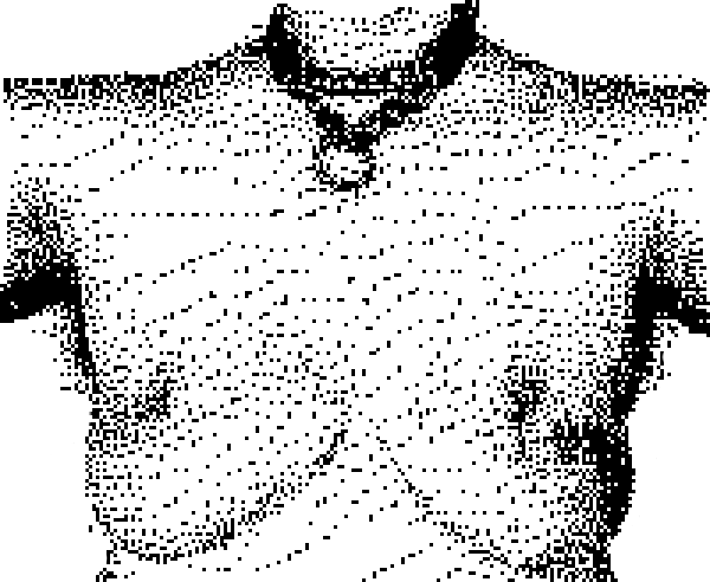

One year of WebWarlord at Neotitties dot org

Sorry that every post is my tits lately; obviously I've been feeling some sort of way about them. It's been a year since I got a radical breast reduction surgery after wanting to do SOMETHING with them for at least a decade. And I can say it has basically been completely lifechanging (positive).
I wrote this zine about it shortly afterwards, combining the hang ups and anxiety preceding the surgery with the struggles of early recovery but also the novelty of having, well, a completely different body. That novelty hasn't worn off, though it's become more everyday-- I can dress how I like and buy clothes off the rack and like how they look on me, move with ease and struggle with significantly less neck and back pain.
But other stuff also happened. You can see some dark spots around the left nipple up there, which are scars from some latebreaking stitch sinuses I struggled to get to close from September to December of last year. That boob also had a small t-junction breakdown and an inverted nipple for the first few months of recovery, the latter of which I had to get a nipple suction bulb to gradually reverse... a truly dicey purchase to make in a world of presumptive ad data collection and grotesquely pro-natalist algorithms... LOL. Hopefully regular scar massage will bring them down in size and closer in color to the surrounding skin, though, even if my online shopping ad suggestions may never recover.
So, well WHY NOT TOTALLY FLAT? If you're so agender... Not like I have to justify anything, but I thought about this a lot myself. Even though, functionally, this surgery was extremely "gender affirming" in the sense that, holy shit, I'm suddenly NOT profoundly alienated by my body, and can enjoy existing in it, and enacting my own fairly creaturely/androgynous conception of gender, etc, etc... they are still visually basically "breasts," which is not the typical outcome for "gender affirming chest surgery" when the individual in question is starting out with huge boobs.
This change is already pretty dramatic for me, though-- I started out as one of those insane GHIJ onwards type sizes that sound fake... I hadn't measured myself in years because I was just wearing like, the "super barbell rated tittymasher 12 clasp sportswoman bra" or whatever because it was the only thing that like... minimized them. A binder was basically not an option before; it is now (well, now that the last of the super-tedious open wounds are all healed). Though most days I go without a bra and can now just go with one of the £12 M&S sports bras if I feel like the puppies need a little more compression.
I think I'm about a B cup now, though I don't actually need to know, and it's a miracle plus a testament to the skill of the surgical team (who also did a really nice job of putting me under, even though I was terrified lol) that my nipples are both fully intact and functional after such a sizable reduction. A kilo... A KILO! came off of EACH side, though they often felt even heavier than that. It's completely changed my embodied, day to day experience, but also, I can like, shop online and off the rack at thrift stores now, without having to think about how to work around or mitigate the one part of my body that was both HUGE and that I hated having.
There's so many more options for how I present myself, AND so many other things that I don't have to think about anymore. I do miss some charmingly androgynous hairs I had around one of my nipples that were sacrificed during the surgery, but yesterday in the shower I saw one faintly growing back, and well, there's always additional methods I can shake down for more...
In his fiction cum fetish essay Mae West's Reduction Mammoplasty JG Ballard describes how a two-phase surgical process is used in some cases to deal with the volume of tissue while maintaining nipple erection and sensitivity. Immediately after the surgery, I estimated my odds on doing the same to be 25% would to 75% wouldn't. Now I'm feeling more like it's 20-80, though it depends on how things go with mid to late life hormone changes and weight fluctuations. Maybe if we get around to overthrowing the government or at least giving them a good scare, I could get the second one (or hormones) for free rather than having to go private...
Sometimes they still feel big, in that "they grew back!" type dread, and I'm sometimes curious about how totally flat would look/feel, but also still enjoy having full nipple sensation and a bit to grab there, you know! And those aren't even gendered features if you're living rightly. Whatever my long term strategy is, this surgery has already been an enormous freedom in my life.
"death to 'healthy breast tissue!'" --The WebWarlord at NeoTitties dot org